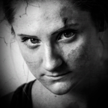

Арика
Арика (англ. Arica) — одна из двенадцати играбельных персонажей игры This War of
Mine.

-
Описание
- Воровка, мастерски взламывает замки и пилит стальные решётки, убивает с одного удара из укрытия ножом, может передвигаться, издавая меньше шума по сравнению с другими. Курильщица. Умеет играть на гитаре.
-
Автобиография
- "Я простая девчонка с района, и я знаю жизнь. Улица дала мне больше, чем родной отец. Старый ублюдок бил меня по любому поводу, а бить он умел. Это всё уже кончено, он скопытился в первые дни войны. Я была воровкой с той самой поры, как мне стукнуло 14, вы знаете, что это за возраст. Я это делаю лучше, чем вы можете представить, умею красться, как мышь. Не глупи, я вам пригожусь."
-
Можно мне остаться с вами?
- "Эй, как дела? Хорошее у вас тут местечко. Я ищу, где бы ненадолго спрятаться. Я раньше жила в многоэтажке, пока её не разбомбили. Предложение такое: разрешите мне пожить здесь, а я вам помогу. Я умею ходить тихо, как кошка."
-
Истории
- "Я вам рассказывала про своего батю, я ненавидела этого козла. Но война меняет людей. В ту ночь, когда бомба упала на Гравию, что - то поменялось.То, что он сделал....Я никогда не забуду. Вы ведь слышали , что они сделали в Гравии?"
- "В ту ночь меня ранило осколком в бедро. Военные вошли в город и начали убивать как повстанцев, так и гражданских. Нужно было бежать, а я даже не могла встать с кровати. Так что я просто лежала там в ожидании смерти. Я надеялась, что старый пьяница спасётся сам, чтобы не смотреть на него, поджидая смерть. Зачем волноваться о том, что не можешь изменить?"
- "Он вынес меня из города. Он шёл всю ночь. Мы шли посреди испуганной толпы. Отец нёс меня всю дорогу. Понятия не имею, откуда старый алкаш нашёл в себе столько сил. Забрезжил рассвет, а он продолжал нести меня. Когда мы добрались сюда, он просто упал на колени и умер. Я всегда буду помнить его последний шёпот."
-
Особенности
- Крадётся тихо – взламывает и передвигается на 20% тише. Боец – Может убить одним ударом со спины,игнорирует один удар ближнего боя нанесённый ей, увеличен урон в ближнем бою.
- Рюкзак – 10 слотов.
- Охрана убежища – Способный охранник.
- Зависимость – Курильщица.
- Гитара – Умеет играет на гитаре.
- Повышается мораль от торговли медикаментами в Гараже, убийства солдата в Супермаркете, убийства солдат на Стройплощадке. Воровка – если у группы трудности может убежать своровав все продукты. Не подтверждено: есть ли отличия? Все воруют, когда уходят.